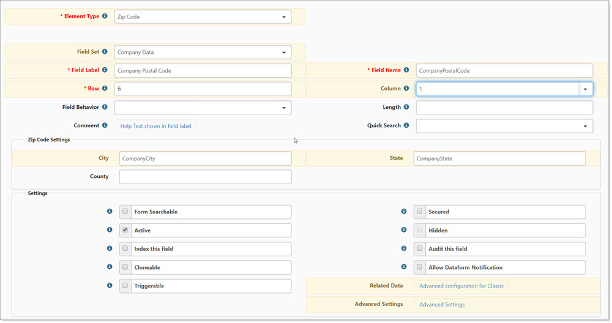

The Zip Code datatype is a dynamic control that can be configured to auto-fill related fields on the form. This can be a great time saver, especially when configuring dataforms with multiple address fields. The field is configured using a semi-colon separated list of related fields in the related data field of the field configuration dialog.

To configure a Zip Code datatype on your dataform:
Add the zip code field and other related fields such as City, State, and County.
In the Zip Code Settings fieldset, complete the fields for City, State, and County. These could be fields such as BillingCity, BillingState, BillingCounty – as long as the field names are correctly spelled and in the appropriate zip code settings fields. In this way, you can use the same zipcode datatype to fill multiple city state and county fields on the same dataform.
Save your dataform field.
Now when you fill the zipcode field on the dataform and tab out of the field, the associated City, State, and County fields are auto-filled.